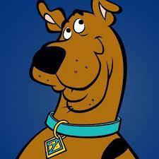

Scooby-Doo is the eponymous character in the Scooby-Doo animated television series created by Joe Ruby and Ken Spears alongside the popular American animation company Hanna-Barbera.
Shaggy is a cowardly slacker more interested in eating than solving mysteries.

Velma is usually portrayed as a highly intelligent young woman with various interests ranging from highly specified sciences or merely being very well read on various and sometimes obscure information, such as ancient Viking writing.